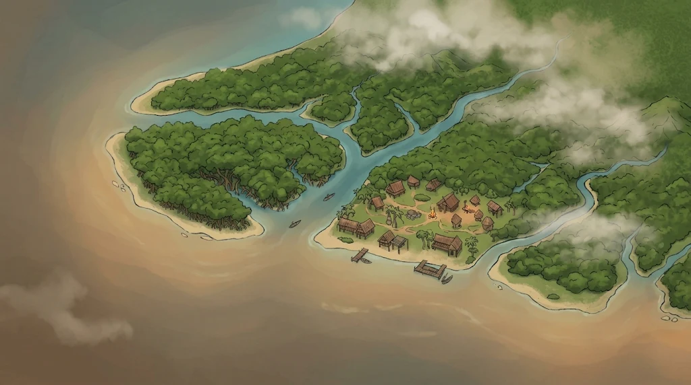

Collect materials! (Interact with swamp plants)
(Read story preview)
The traditional dance performed to attract and honour guardian spirits, marking harvest celebrations.
Connect with living heritage, check real artworks, or directly interact through NGOs and travel hubs.